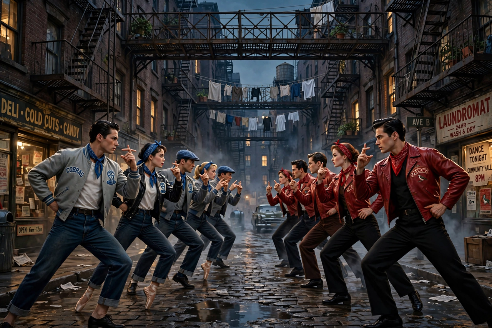

| West Side Story | |
|---|---|
 | |
| Music | Leonard Bernstein |
| Lyrics | Stephen Sondheim |
| Book | Arthur Laurents |
| Conceived / choreographed by | Jerome Robbins |
| Basis | Romeo and Juliet by William Shakespeare |
| Premiere | September 26, 1957 — Winter Garden Theatre, Broadway |
West Side Story is a musical conceived by Jerome Robbins with music by Leonard Bernstein, lyrics by Stephen Sondheim, and a book by Arthur Laurents. Inspired by William Shakespeare's Romeo and Juliet, the story is set in the mid-1950s in the Upper West Side of Manhattan — in the neighborhood then being cleared for Lincoln Center — and explores the rivalry between the Jets and the Sharks, two teenage street gangs of different ethnic backgrounds.
Tony, a former Jet, falls for Maria, the sister of Sharks leader Bernardo, at a dance at the gym. Their love deepens the gangs' hatred, and a planned rumble ends with Bernardo killing Jets leader Riff and Tony killing Bernardo; Tony is himself shot at the end, dying in Maria's arms. The score fuses classical, jazz, and Latin idioms and includes "Something's Coming", "Maria", "Tonight", "America", "I Feel Pretty", "Somewhere", and "Gee, Officer Krupke". The tritone and Bernstein's restless rhythms pervade the music, and Robbins's choreography made dance carry the drama.
The original Broadway production (1957) ran for 732 performances — a respectable but not spectacular run — and won two Tony Awards, losing Best Musical to The Music Man. The 1961 film adaptation, co-directed by Robbins and Robert Wise, transformed its reputation: it won ten Academy Awards, including Best Picture. Steven Spielberg's 2021 film version, with a screenplay by Tony Kushner and Rita Moreno returning as the new character Valentina, was also widely acclaimed. Major stage revivals include the 2009 bilingual Broadway production and Ivo van Hove's 2020 staging.
West Side Story is regarded as a landmark that expanded what musical theatre could do — in subject matter, dance, and musical complexity — launching Sondheim's career and standing as Bernstein's most popular stage work.